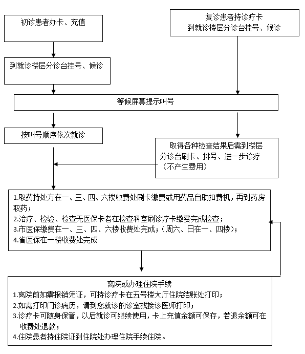
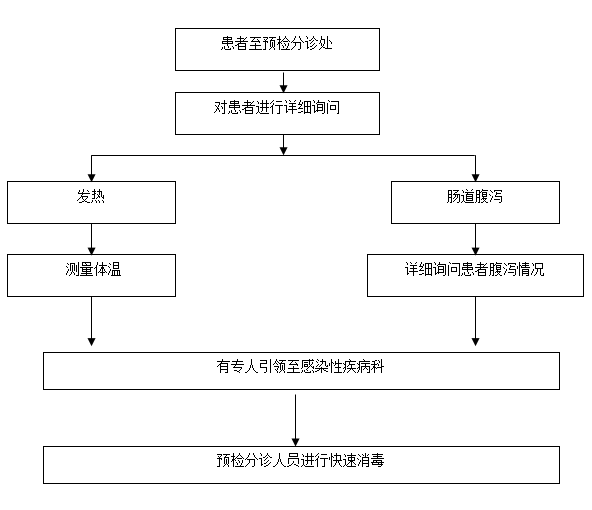

门诊“银杏诊疗卡”使用须知
1.患者就诊必须实名建卡，建议您持二代身份证直接到自助机办理“银杏诊疗卡”并充值。若无二代身份证可填写个人基本信息后再到收费处办理。请您确保姓名、年龄、性别、身份证及手机号码信息准确，以便您以后预约诊疗成功和医生出诊时间有变动时给您发短信。
2.持就诊卡到相应科室分诊台或自助机刷卡挂号，在候诊区候诊时请注意显示屏叫号，按序就诊。预约患者挂号后姓名会在预约时段内前移，优先就诊。
3.就诊时为您开具电子检查单和电子处方，若卡内余额充足，您可根据检查单和电子处方下面的地址提示、直接到相应科室自助缴费候诊或取药。使用医保卡缴费的患者可到收费处缴费或到相应科室使用云POS机缴费候诊排队。若卡内余额不足，应先到收费处或自助机充值。故建议您建卡时，根据病情在卡内储存一定数目的金额，避免多次充值，以便为您就诊节省时间。
4.“银杏诊疗卡”内保存有您就诊时的病历、检查结果、处方、费用等相关信息，请您复诊时带上此卡，不要随意更换或丢弃。
5.卡内存有您重要信息，长期有效，请妥善保管，勿靠近高危、强磁、勿折划。若丢失请携带身份证及时到收费处窗口挂失或补办。
6.当天就诊结束后，您可以到门诊收费处办理结算，打印费用清单和发票。
7.办卡免费，卡内余额可自由取出（银行卡充值当天不退费）。
门诊就诊流程图

预检分诊工作流程

答疑解难
1.持我院 “银杏诊疗卡”卡如何看病？
实行 “银杏诊疗卡”卡后，每个患者都需要先办一张就诊卡，卡上预存一些钱（建议您至少预存200元），然后持卡去各科分诊台刷卡挂号候诊、就诊、检查或取药，不需要反复排队划价、交钱，就诊结束后到门诊收费处办理结算、打印发票。
2.没有 “银杏诊疗卡”卡能看病吗？
不能，因为门诊所有的环节都采用划卡，分诊护士刷卡挂号、按顺序候诊、就诊，医生刷卡读取患者信息并直接在电脑上书写门诊病历、开检查申请单、治疗单及处方，患者直接到检查科室、治疗室、药房刷卡进行检查、治疗、取药，电脑自动划价扣费。
3.卡上应该预交多少钱？
至少应足够支付挂号费和诊疗费 10元（简易门诊号0.5元、普通号约需2.5元、副主任医师号4.5元、主任医师号5.5元、60岁以上免0.5元）。但是我们建议您最好多预交一些，当发生费用时电脑自动扣取，免得一次次排队交费。就诊结束可在收费处退出余额。
4.第二次再来看病还需要办卡吗？
只要把原来办的就诊卡带来继续使用即可。只要就诊卡不遗失、不损坏，就可以一直用，不需要重复办卡。医生还可以查阅到以前的就诊记录，有助于了解历史病情。忘记带卡，可以到收费处报您办卡时填报的电话号码、出生年月等信息即可查询您的诊疗卡号码，无需再办理；如已遗失，需要重新填写信息并办理挂失手续。
5.一楼大厅没有了挂号处，是否不需要挂号了？
需要挂号，只是不用像以前那样挤在挂号室排队挂号，而是直接到就诊科室由分诊护士在分诊、咨询台刷卡挂号，同时扣除挂号费。
6.就诊卡能退吗？
不能，我院“银杏诊疗卡”卡属于低值不回收卡。
7.我能不能全家办一张卡共用？
不能，“银杏诊疗卡”实行实名制，因为每一张“银杏诊疗卡”都会对应一份就诊记录档案，诊疗过程许多内容与患者的年龄和性别、疾病诊治有很强的针对性，全家共用一张卡会造成混乱，因此应该一人一卡。
8.我能不能看完一位医生，再直接找另一位医生看病？
可以直接选择医生刷卡候诊就诊，电脑自动处理挂号费和诊疗费。当然，患者找两位医生看病，电脑收取两次的挂号费和诊疗费。
9.我刷卡挂过号了，然后去做检查，回到医生那里再刷卡，会不会收两遍挂号费？
不会，电脑会自动记忆，在有效时间内（24小时内）划多次卡都不会重复收挂号费和诊疗费。
10.我需要打结算发票，应该怎么办？
到门诊大厅一楼收费处结算即可。结算有两种：结存和退款。退款，到门诊各人工收费处即可退款；建议您卡上账户的余额继续保留，下次就诊就可以直接到就诊科室由分诊护士在分诊台刷卡挂号、候诊
11.有医保卡还需要办“银杏诊疗卡”吗？
需要，现门诊医保卡仅能在检查、取药时使用，挂号仍需办理“银杏诊疗卡”，请预存挂号费用。